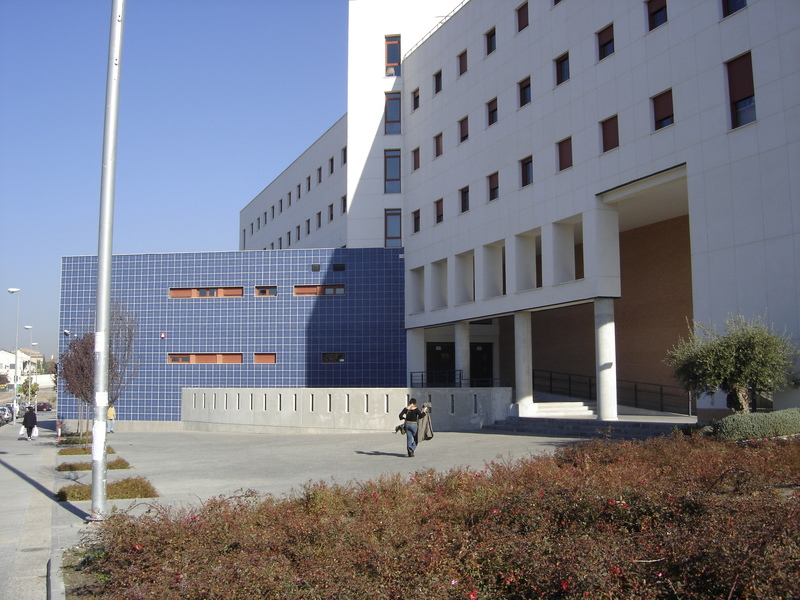

PRIMER CONGRESO DE CEIIE
ETS de Ingenierías Informática y Telecomunicación
La Escuela Técnica Superior de Ingenierías Informática y de Telecomunicación (ETSIIT) es un centro docente de la Universidad de Granada situado en el campus Aynadamar, junto a la Facultad de Bellas Artes.
Instalaciones y servicios
La ETSIIT dispone de los siguientes servicios e instalaciones:
- Biblioteca
- Salas y aulas
- Secretaría
- Conserjería
- Reprografía y fotocopia
- Cafetería y comedor universitario
- Servicio de vigilancia
Organización del edificio:
La ETSIIT está dividida en dos edificios comunicados entre sí:
- En el primer edificio se encuentran la cafetería y el comedor universitario, los servicios administrativos, la biblioteca y los distintos departamentos.
- En el segundo edificio se encuentran las aulas de teoría y prácticas.
Cada uno de estos dos edificios consta de 5 plantas más un semisótano.